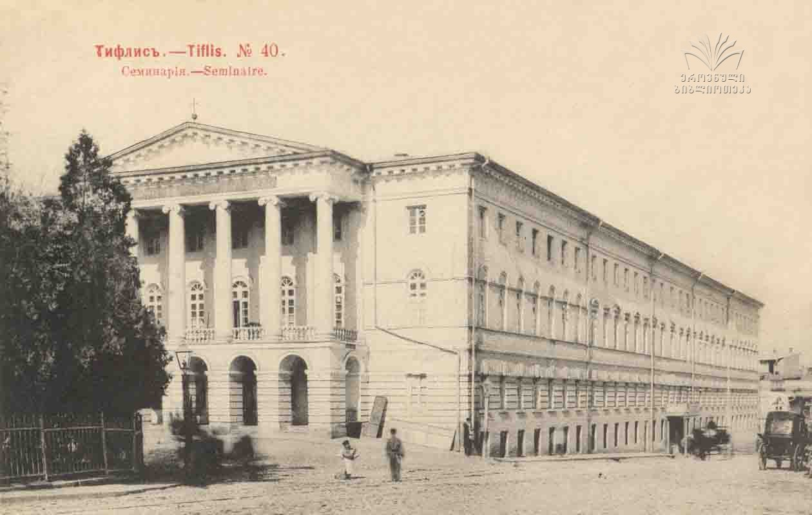

Family Background
Joseph Vissarionovich Stalin, born Ioseb Besarionis dze Jughashvili on December 18, 1878, in Gori, Georgia, emerged from humble beginnings. His father, Besarion Jughashvili, worked as a cobbler, and his mother, Ketevan Geladze, took on the role of a washerwoman. The Jughashvili family experienced severe economic hardships, living in impoverished conditions within the small town of Gori, then part of the vast Russian Empire.
Childhood in Gori
Stalin's early years were marked by adversity. The family struggled financially, and young Stalin faced health challenges, notably a bout of smallpox that left enduring facial scars. Despite these difficulties, Stalin showcased intellectual promise. He attended the Gori Church School, where he received a religious education that would later contribute to his diverse intellectual background.
Education
In 1894, Stalin's life took a turn when he received a scholarship to the Tbilisi Spiritual Seminary, a Georgian Orthodox institution. This educational opportunity exposed him to a broader intellectual landscape, introducing him to revolutionary ideas. It was during his time at the seminary that Stalin delved into literature on socialism and Marxism. His ideological evolution began to take shape, laying the groundwork for his future involvement in radical political activities.
Involvement in Revolutionary Activities
Stalin's journey into revolutionary politics gained momentum during his time in Tbilisi. In 1898, he joined the Marxist Russian Social Democratic Labour Party (RSDLP), aligning himself with the revolutionary cause. His commitment to radical ideologies manifested in active participation in organizing strikes, protests, and acts of civil disobedience. These activities did not go unnoticed by the authorities, resulting in Stalin's arrest on multiple occasions and subsequent periods of exile in Siberia. Crucially, Stalin's path intersected with key figures in the revolutionary movement, most notably Vladimir Lenin. His association with the Bolshevik faction of the RSDLP, led by Lenin, positioned him at the forefront of revolutionary fervor. This period marked the foundation of Stalin's political identity and set the stage for his future role as a significant figure in the Bolshevik Party and, eventually, the leader of the Soviet Union.